Электронные рычажные весы (диапазон -1999 ... +1999 мг, разрешение 1 мг)
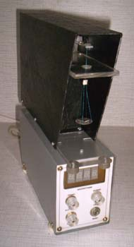
Назначение
Весы предназначены для взвешивания образцов при проведении физико-химических испытаний, а также могут использоваться в качестве динамометра при выполнении лабораторных опытов.
Технические характеристики
Конструкция
Весы состоят из силоизмерительного датчика, преобразующего измеряемое усилие в электронный сигнал, и электронного блока управления, который выполняет функции преобразования, измерения и индикации сигнала датчика, а также служит в качестве источника питания. Силоизмерительный датчик построен по рычажной схеме (рис. 1) и состоит из двух равноплечих рычагов - коромысла, установленного на игольчатой опоре. На один конец коромысла подвешивается чашка, в которую помещается измеряемый образец. Коромысло уравновешивается магнитоэлектрическим приводом [1], представляющим собой постоянный магнит, находящийся внутри дифференциального соленоида. Постоянный магнит, изготовленный на основе магнитного порошка с термостабильными свойствами и полимерного связующего [4] и намагниченный в установке импульсного намагничивания [5], закреплен на другом конце коромысла, а дифференциальный соленоид установлен на станине весов. В качестве датчика положения коромысла используется фотоэлектронный датчик [3], сигнал которого поступает на вход пропорционально-интегрально-дифференциального регулятора (ПИД-регулятора). Выходной сигнал ПИД-регулятора подается на дифференциальный соленоид магнитоэлектрического привода, приводящего коромысло в исходное равновесное положение. Ток, протекающий, через дифференциальный соленоид, прямо пропорционален развиваемому приводом усилию, а значит и весу измеряемого образца. Таким образом, в конструкции реализована схема измерения компенсационного типа.
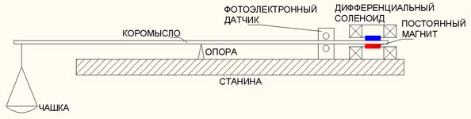
Рис. 1. Схема силоизмерительного датчика.
Электронная схема весов (рис. 2, 3) состоит из следующих узлов: фотоэлектронный датчик положения, ПИД-регулятор, узел сдвига нуля, цифровой вольтметр, стабилизатор напряжения.
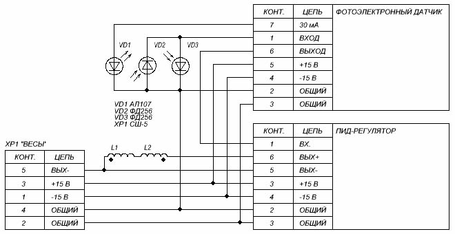
Рис. 2. Электрическая принципиальная схема силоизмерительного датчика весов.
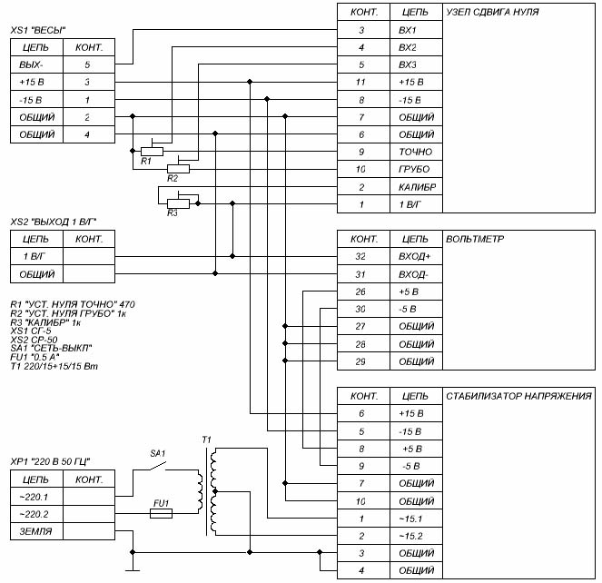
Рис. 3. Электрическая принципиальная схема блока управления весов.
Электрическая принципиальная схема фотоэлектронного датчика положения показана на рис. 4. Резистор R1 играет роль источника тока инфракрасного светодиода VD1 (АЛ107). Световой поток от светодиода VD1 достигает фотодиодов VD2, VD3 (ФД256), включенных встречно-параллельно. Разность сигналов фотодиодов поступает на вход операционного усилителя (ОУ) DA1 (КР140УД1408), выполняющего функцию преобразователя ток-напряжение, и усиливается до необходимого значения (коэффициент преобразования задается величиной резисторов R3, R4). Питание схемы осуществляется от двухполярного источника напряжением +15 В. В качестве шторки датчика, обеспечивающей противофазное изменение светового потока от светодиода к фотодиодам, используется коромысло весов.
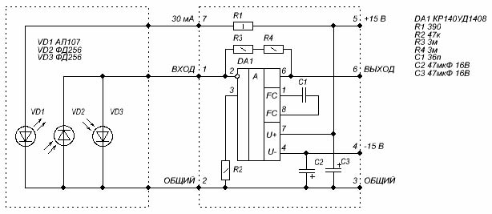
Рис. 4. Схема электрическая принципиальная фотоэлектронного датчика положения.
Сигнал, пропорциональный отклонению коромысла весов от равновесного положения (сигнал рассогласования), с выхода фотоэлектронного датчика идет на вход ПИД-регулятора (рис. 5), собранного на ОУ DA1 (КР140УД708). Выходное напряжение ПИД-регулятора с контактов ВЫХ+, ВЫХ- поступает на дифференциальный соленоид магнитоэлектрического привода, возвращающего коромысло весов в равновесное положение. Напряжение на резисторе R4 при этом пропорционально выходному току и, следовательно, весу измеряемого образца.
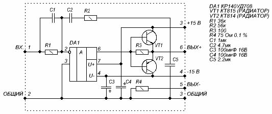
Рис. 5. Схема электрическая принципиальная ПИД-регулятора.
Для приведения выходного сигнала ПИД-регулятора к уровню 1 В/г (1 мВ/мг) и установки нулевых показаний весов служит узел сдвига нуля, схема которого приведена на рис. 6. ОУ DA1 (КР140УД708) выполняет функцию сумматора, совмещенного с фильтром нижних частот (ФНЧ), на входы которого подается измеряемый сигнал и напряжения с потенциометров грубой и точной регулировки нуля (R2 "УСТ. НУЛЯ ГРУБО", R1 "УСТ. НУЛЯ ТОЧНО"). Коэффициент усиления сумматора задается переменным резистором R3 "КАЛИБР", посредством чего осуществляется калибровка весов.
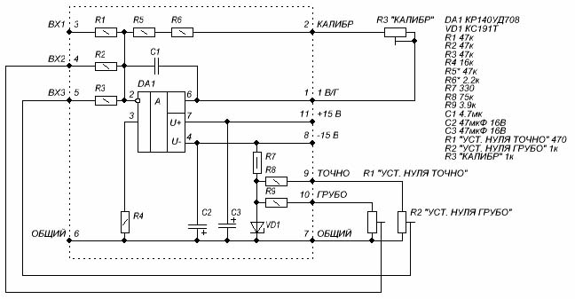
Рис. 6. Схема электрическая принципиальная узла сдвига нуля.
На рис. 7 изображена электрическая принципиальная схема цифрового вольтметра с диапазоном измерения 0 ... +1999 мВ. Вольтметр собран по типовой схеме [2] на микросхеме DA1 ICL7107 (аналог КР572ПВ2А), которая выполняет функцию аналого-цифрового преобразователя (АЦП) с двойным интегрированием, автоматической коррекцией нуля и определением полярности входного сигнала. К выходу микросхемы непосредственно подключается 3.5-декадное цифровое табло с 7-сегментными светодиодными индикаторами типа АЛС321Б (АЛС324Б). Источник опорного напряжения (ИОН) +1000 мВ собран по схеме резистивного делителя R1R2, подключаемого непосредственно к источнику питающего напряжения +5 В, который должен иметь достаточную стабильность. Режим работы АЦП определяется параметрами навесных элементов R4, R5, C1 - C4. Измеряемое напряжение подается на контакты ВХОД+, ВХОД- вольтметра. Потенциал этих контактов может быть произвольным в пределах диапазона питающих напряжений. Конструктивно вольтметр состоит из двух печатных плат, на одной из которых собран АЦП с навесными элементами, а на другой - цифровое табло. Платы соединяются между собой с помощью кабеля.
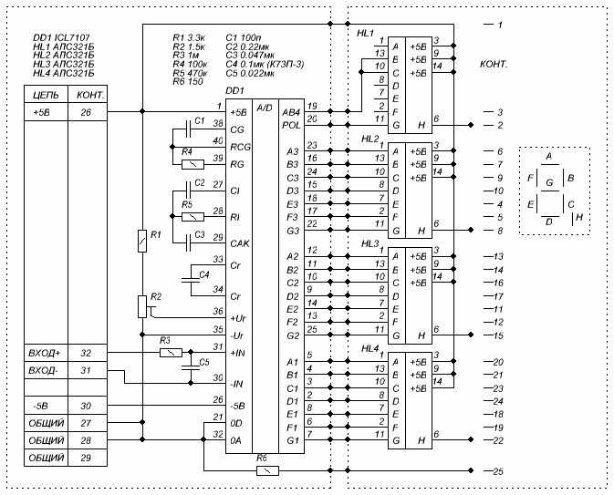
Рис. 7. Схема электрическая принципиальная цифрового вольтметра.
Для питания электронных узлов прибора служит стабилизатор напряжения (рис. 8), подключенный к силовому трансформатору с выходным напряжением 2 х 15 В. Транзисторы VT1, VT2 включены по схеме параметрического стабилизатора и обеспечивают на выходе напряжения +15 и -15 вольт соответственно. Для получения напряжений +5 и -5 вольт используются линейные стабилизаторы напряжения DA1, DA2.
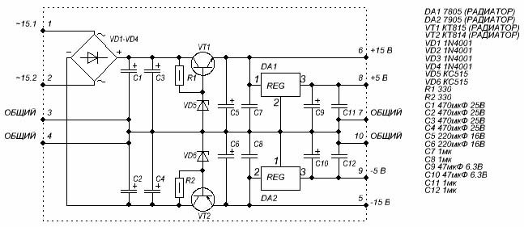
Рис. 8. Схема электрическая принципиальная стабилизатора напряжения.
Внешний вид электронных весов показан на рис. 9. Весы состоят из двух блоков - силоизмерительного датчика и блока управления, соединяемых между собой кабелем. Раздельная конструкция обеспечивает удобство эксплуатации. Для калибровки весов используются образцы из нержавеющей стали с заданным весом (около 1900 мг). Наличие выходного разъема с уровнем сигнала 1 В/г позволяет подключать весы через АЦП к компьютеру или использовать их в составе измерительных комплексов.
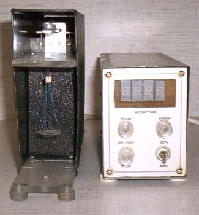 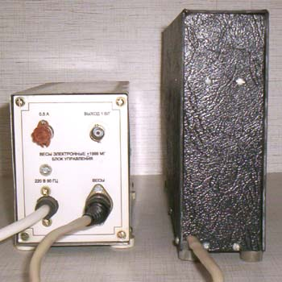
Рис. 9. Электронные весы: вид спереди и сзади.
Ссылки:
09.08.2010
16.08.2010
Альтернативные источники
энергии
Компьютеры и
Интернет
Магнитные поля
Механотронные системы
Перспективные
разработки
Электроника и
технология